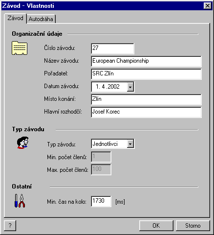
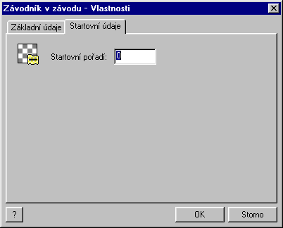
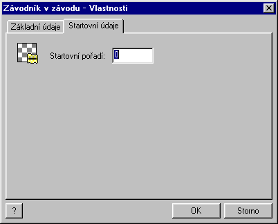

A new race is created using File | New | Race command (or ctrl+N shortcut or appropriate icon in the toolbar). First, you get prompted to choose a race system to be used. In the popup window, you may choose any race system you have previously defined. Then press OK button.
Then, the property sheet window Race properties pops up.
After the OK button is pushed, the race definition itself is begun. In the tree view window at the left margin of the application window a new tree view named Race appears. Now with these item: Race -- definition with the folder of Documents and the race system you have selected. The Documents folder is now empty. It will contain all the documents automatically generated during the race.
Now it is necessary to define, which racers are about to attend the race. Switch back to the Database tree by clicking on its tab in the bottom left corner of the application window. Double-click on the Racers folder. Their list appears on the right side of the application window. (The program behaves in the similar manner as the Windows Explorer.) Then go back to the Race tree.
Use your mouse to drag-and-drop the selected racers onto the Race -- definition. (Drag and drop: Click and hold the mouse button on the selected racer. Then, holding the mouse button down, drag the mouse pointer onto the target item. A small "+" sign appears by the mouse cursor if you reach the target item. Then release the mouse button.) You may also select a racer and then press the F8 key or issue the Race | Add to race command.
For each racer inserted into the race, the following window appears allowing you to change the racer's display name and starting position:
 

To modify the properties of any item in the race, simply double-click on the item in the Race tree.
Note: In the subsequent text, if not stated otherwise, all the commands are both in the Race menu and the context menu of the Race item in the Race tree.
The end of the race definition is done by the End of race definition command. You get prompted to store the race settings onto your hard drive. The race settings (and measured data) are stored into files with the ".rce" extension. You may manipulate with these files exactly the same way as with the documents created using your favorite word processing software.